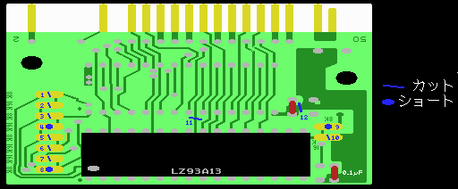

５．CUT&SHORT

まず、 カッターで実体図に青の斜線で示した部分のパターンをカットします。
左に8箇所、右に2箇所、半月状のパターンが向き合っている部分があります。向かいあった半月状のパターンが、つながっている場合だけカットしてください。基板中央部分にあるパターンと、中央右の方のコンデンサ（無い場合もあります。）の根元のパターンもカットします。
TAS-1M016Sの場合、2, 6, 7, 10, 11, 12をカットします。
TAS-1M008Sの場合、1, 3, 5, 11,12をカットします。
次に、青い丸で書かれた部分をショートします（つなぎます）。ここも元々つながっている部分がありますので、つながっていない部分だけつなげてください。半月上の部分の橋渡しとして、適当に抵抗の足の切れ端等を置き、両側に半田を盛ってつなげます。慣れれば切れ端も必要ないでしょう。
TAS-1M016Sの場合、8, 9をショートします。
TAS-1M008Sの場合、4をショートします。
ここで、カット及びショートした部分はテスター等できちんとチェックしておきましょう。
これで回路図の下記の部分の配線が完了です。（SRAMはついていませんが）
LZ93A13 4ピン B1 - A14 3ピン 628512
LZ93A13 5ピン B0 - A13 28ピン 628512
LZ93A13 25ピン SEL - 5V
回路図で青で示した部分の配線がこれで終わりです。これからの配線もそうですが、配線が終った部分には回路図や実体図に印を付けておくと良いでしょう。
TAS-1M016SとTAS-1M008Sはここでカット&ショートする部分が異なるだけで、以降は全く一緒です。
 次へ
次へ
ここから先は、分かる人向けの説明です。分からなくても支障はありません。次へ進んでください。
この作業について説明しますと、1〜8の半月状の部分の左半分はメガロムコントローラ（LZ93A13）、右半分はROM（SRAM）につながっています。ROMとSRAMではちょっとピン配置が異なるので、2箇所だけつなげ、あとはカットしています。
半月左 半月右
LZ93A13 ROM SRAM
１ B3 A16 /OE
２ B2 A16 /OE
３ B2 A15 A14
４ B1 A15 A14 つなぐ
５ B1 A14 /WE
６ B0 A14 /WE
７ A13(slot) A13 A13
８ B0 A13 A13 つなぐ
右側にある半月上の部分は、左半分がメガロムコントローラ（LZ93A13）のSEL、右半分は5VもしくはGNDにつながっています。メガロムコントローラを16kバンクモードで使うか、8kバンクモードで使うかを選択する部分です。似非RAMでは8kバンクモードを使用していますので、SELは5Vとつないでおきます。
半月左 半月右
LZ93A13
９ SEL 5V つなぐ
10 SEL GND
11番は、メガロムコントローラとSRAMの/CS（22ピン）をつなげています。/CSはLS139とつなぎますので、この部分はカットします。12番は、SRAMのGNDです。SRAMの電源はバックアップ電池から供給しますので、ここはカットします。